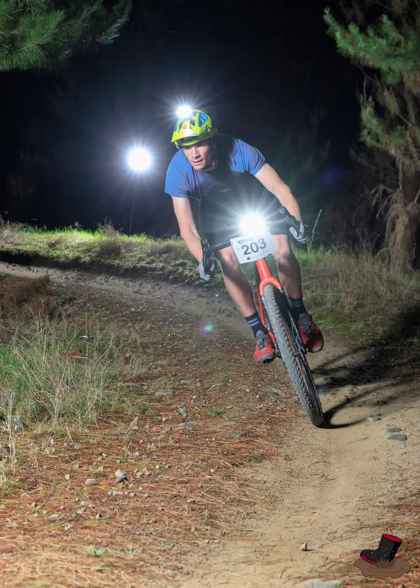

Honest, high-quality bike servicing and sales - right by Bottle Lake Forest.
Hey, I’m Patrick - the guy behind Bottle Lake Bikes.
Bottle Lake Bikes offers repairs and servicing for all types of bikes. I’m also happy to help with other gear and have experience working on scooters, prams, and wheelchairs.
Whether you’re keeping a commuter running on a budget or after a full service for your high-end mountain, gravel, or road bike, you can expect friendly, personalised, and efficient service.
Life gets busy, so I offer flexible drop-offs and pick-ups outside standard hours. Just give me a call during the day to arrange a time.
I’m also a big believer in giving quality second-hand bikes a second life. I sell fully serviced used bikes, can buy your bike outright or sell it on your behalf, and even act as a buying agent if you want a great deal without the risk of ending up with a lemon.
My journey into bikes started around age 10, building backyard trails with my brother on our parents’ farm. We kept our bikes going by piecing together the cheapest secondhand parts we could find, using whatever tools were available. I still remember tying an old chain to a workbench to make a makeshift chain whip and swapping a snapped frame on the garage floor.
Since then, I’ve worked in the cycling industry as a service technician, a design engineer, and in product sourcing. Starting Bottle Lake Bikes felt like the natural next step.
My goal is simple: offer clear communication and high-quality service every time. From a flat tyre to a full overhaul, I’ll treat your bike like my own and keep you informed along the way.
Located right next to Bottle Lake Forest - feel free to pop in and say hi.
